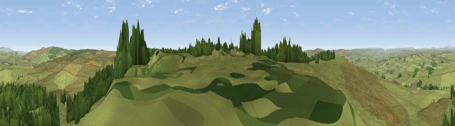

Viewpoint near Elsdon
#12745 in England · top 31% of its area beats it · near ElsdonWhere it is
The exact computed spot (NY 93125 90275). Click the marker for map links.
The view, rendered

A 360° render of this exact spot computed from the terrain model, tree cover and land cover — summer colours, afternoon light, calibrated against photographs of famous viewpoints. Real trees, hedges and buildings will differ in detail.
The panorama
Grey silhouette: terrain skyline in each direction (720 bearings, Earth curvature and refraction included). Dashed green: skyline with trees (+15 m) and buildings (+8 m) as obstacles. Blue strip: how far the ground is visible on each bearing.
Where the view opens
Wedge length = distance to the farthest visible ground on that bearing (vegetation-aware). Rings at 10, 25 and 50 km.
What fills the view
78% grassland · 22% woodland
Angular shares of the visible panorama (visual magnitude), not map area. Landscape diversity 0.24 (0–1 Shannon).
Key numbers
More beautiful places nearby
The staircase of upgrades: each row has a higher view potential than everything closer. Driving times are estimates from straight-line distance, calibrated against real road routing — check an actual route before setting out.
| Place | Direction | Drive | Score |
|---|---|---|---|
| Viewpoint near Elsdon | W · 1 km | ~3 min | 65.3 |
| Hart Side | SSW · 3 km | ~6 min | 71.0 |
| Viewpoint near West Woodburn | S · 6 km | ~13 min | 73.4 |
| Darden Rigg | NE · 8 km | ~17 min | 77.0 |
| Viewpoint near Hepple | NE · 12 km | ~23 min | 82.4 |
| Viewpoint c12273_7856 | N · 23 km | ~38 min | 83.7 |
| Viewpoint c12396_7887 | N · 30 km | ~46 min | 85.7 |
| Viewpoint near Chillingham | NNE · 38 km | ~57 min | 88.1 |
55.20668, -2.10957 · source: screening · position refined by local search. Computed location — check access rights before visiting.